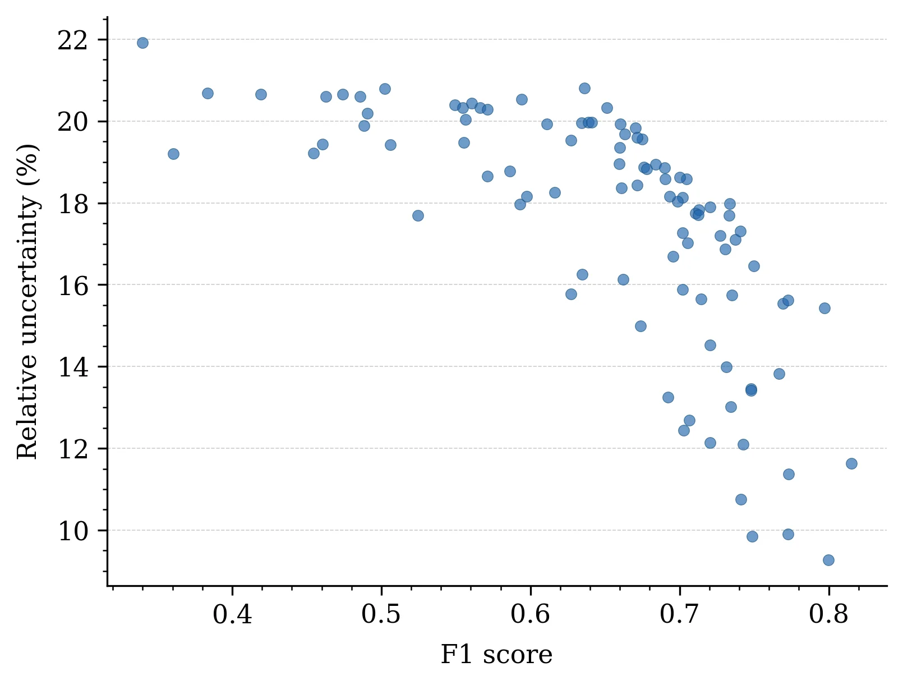
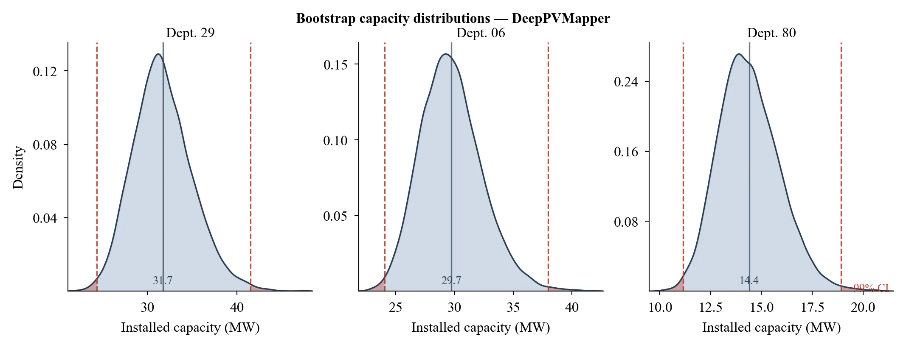
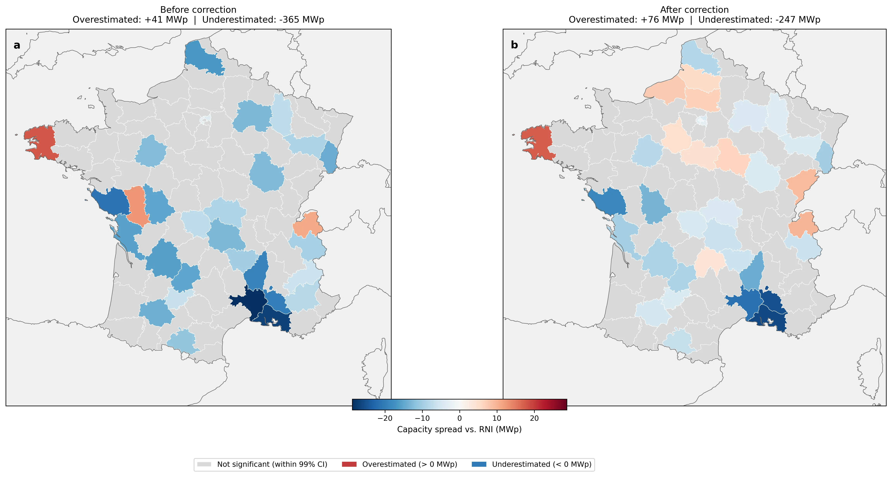
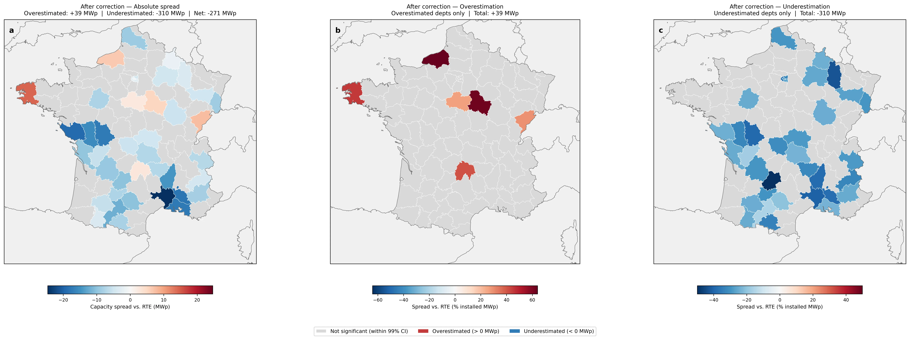

Monitoring the deployment of rooftop PV at national scale requires a reliable census of grid-connected installations. In France, this role is filled by two data sources, both produced by RTE (the French transmission system operator): the RNI (Registre National des Installations), a public registry of grid-connected power generation facilities compiled jointly with Enedis and the local distribution operators, and RTE's internal grid-connection data, which RTE itself treats as its ground truth and uses to produce official statistics on the French PV fleet.
But how complete and accurate are these sources, really? This study turns the usual validation logic on its head: instead of using grid-connection data as ground truth to evaluate a remote-sensing method, we use DeepPVMapper's detections — an independent, remote-sensing-based source — as the ground truth to audit the registries themselves, and we ask, separately, whether the RNI and RTE's internal data are consistent with what we observe from the sky.
The starting point is DeepPVMapper's raw output: a count of detected installations and an estimated installed capacity for each département. Taken at face value, these counts are biased — the pipeline's detection precision and recall vary from one département to another, so raw detections systematically over- or under-state the true number of installations depending on local conditions (urban density, roof types, imagery quality, etc.).
We correct for this using the département-level precision and recall measured through manual validation (see Pipeline — §3.2 Validation), which gives, for each département, a corrected (bias-corrected) estimate of the true number of installations and the true installed capacity. Because precision and recall are themselves estimated from a finite validation sample, they carry their own uncertainty — modelled as Beta distributions calibrated on the manual annotations (true/false positives and negatives, see the Pipeline page for the exact construction).
Propagating that uncertainty through to the corrected estimate is the role of the bootstrap procedure at the heart of this study: thousands of plausible precision/recall pairs are drawn from these distributions and each is used to correct the raw detections, which turns a single point estimate into a full bootstrapped distribution — and therefore a confidence interval — around the true value, for every département (full procedure detailed on the Pipeline page).
The audit itself follows a simple decision rule: for each département, we check whether the value reported by a registry (RNI or RTE) falls within the 99% confidence interval of our corrected, remote-sensing-based distribution. A registry value that falls outside this interval signals a likely issue — either in the registry itself, or in RTE's underlying grid-connection data — for that département.
This decision rule is only as trustworthy as the confidence intervals it relies on, so before looking at the audit results themselves, it is worth checking how tight those intervals actually are. The figure below plots, for each département, the F1-score against its relative uncertainty: the validation sample was sized precisely to keep this relative uncertainty under control — 21.9% at most. This intermediate check is what justifies treating the département-level confidence intervals — and hence the audit's conclusions — as meaningful rather than artefacts of a noisy validation.

With that check in hand, the central figure of the analysis is the one the audit is actually read off: for each département, the bootstrapped distribution of the corrected estimate, with the registry's reported value (RNI and/or RTE) overlaid. Whenever that reported value falls outside the 99% confidence interval, we flag a likely discrepancy — this is the figure underlying every result presented in the next section.

The RNI fares poorly against our remote-sensing-based estimates. Part of the apparent gap, however, is an artefact of how the comparison is made: the RNI records installations at the communal level, but for anonymization purposes, municipalities with fewer than ten systems are not individually reported — their capacity is simply missing from a naive commune-by-commune comparison. This creates a truncation bias: small municipalities, which are numerous and collectively account for a non-negligible share of installed capacity, are systematically dropped, distorting the comparison. Aggregating both sources to the département level — where these unregistered communal capacities can be folded back in and compared against department-level totals — corrects for this artefact.

Even once this truncation bias is accounted for, a clear downward bias remains: the RNI systematically under-records installed capacity relative to our corrected remote-sensing estimates.
The comparison with RTE's own internal grid-connection data — the source RTE itself treats as ground truth — is, if anything, more concerning: it reveals a large systematic downward bias, both in absolute terms and relative to the total installed capacity.
The figure below summarizes the picture in three panels. The first shows, département by département, the absolute gap between RTE's figures and our corrected estimates, in MWp of installed capacity. Only 6 départements see RTE overestimate capacity, for a combined +39.2 MWp (1.46% of national installed capacity, with a per-département local gap ranging from 26% to 64% of that département's installed capacity). By contrast, 36 départements — six times as many — see RTE underestimate capacity, for a combined −310.4 MWp (11.52% of national installed capacity, with local gaps ranging from 16% to 50% of the département's installed capacity). This six-to-one imbalance — both in the number of départements affected and in the magnitude of the gap — leaves little ambiguity: RTE's deviations run overwhelmingly in one direction, underestimation. The second and third panels reframe these gaps as a share of each département's installed capacity, making this local severity visible directly on the map.

Netting the two effects out, RTE's internal data underestimate the true national installed capacity by 10.1% (−271.2 MWp) — a gap that is far from negligible for a source treated as ground truth for grid-planning purposes.
The systematic downward bias documented in RTE data raises the question of its underlying causes. While this study is not designed to identify them, the results provide a basis for informed speculation.
Four candidate mechanisms can be considered. Off-grid installations are unlikely to account for a significant share of the gap: the near-universal electrification rate in France and the requirement to intervene on the domestic electrical panel make it implausible that detected installations are systematically disconnected from the grid. Declaration delays and data losses are the most plausible candidates — a dynamic pattern more suggestive of accumulating reporting lags than of a fixed structural gap. Deliberate non-declaration cannot be excluded but remains untestable with the data available here.
The role of local distribution operators (ELDs) appears to be a contributing factor rather than the primary driver. The correlation between ELD presence and data discrepancy is geographically visible and statistically documented, but remains modest and sensitive to a small number of outliers.
Preliminary evidence suggests that the deployment of smart meters (Linky), ongoing since 2024, may be associated with a reduction in the RTE–RNI discrepancy. This remains a temporal correlation at this stage; establishing causality would require a dedicated longitudinal analysis.
More broadly, the existence of systematic underregistration appears to be consistent with assessments from practitioners in the field. The contribution of this work is not to reveal the phenomenon, but to quantify it at national and départment scale, and to provide a reproducible methodology for monitoring it over time.